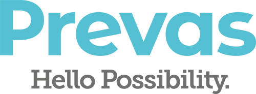

Säker AI för hela organisationen
Medarbetarna använder redan AI, ofta i verktyg ni inte har kontroll över. Vi sätter upp en AI-miljö med rätt behörigheter, loggning och avtal, kopplad till er egen data.
Vi hjälper stora organisationer att lösa verkliga problem med AI, från säkra AI-miljöer till avlastning för support och automatiserade flöden på er egen data.
Vi enas om vad som ska bli bättre innan vi bygger, och mäter det efteråt.
Boka direkt utan att skriva Osäker? Passar AI er, 4 frågor



DEMO ELLER DRIFT
Samma assistent och samma två frågor. Slå om och se vad som måste finnas på plats innan AI får möta verkligheten.
Vilken uppsägningstid gäller i leverantörsavtalet?
Tre månader, och uppsägningen ska vara skriftlig.
Kan vi säga upp i förtid utan kostnad?
Ja, det går bra.
Det står inte i avtalet, så jag gissar inte. Frågan har gått vidare till avtalsansvarig.
Laptop · exempelfiler · ingen logg Er plattform · behörighet kontrollerad · loggat
6av 6 på plats
Har ni en pilot som fastnat i demo-läget? Ta med den till första samtalet.
Boka 15 min om att ta den i driftUPPDRAG
Välj ert område och se hur en avgränsad pilot kan börja. Omfattning och mål bestämmer vi tillsammans före start.
Medarbetarna använder redan AI, ofta i verktyg ni inte har kontroll över. Vi sätter upp en AI-miljö med rätt behörigheter, loggning och avtal, kopplad till er egen data.
Ärenden sorteras, sammanfattas och får svarsförslag. Rätt ärende hamnar hos rätt person, och oklara fall går till en människa.
Sök och svar i interna dokument med källhänvisning, rapporter som sammanställs automatiskt och integrationer mellan era system.
FÖRSLAG TILL FÖRSTA PILOT · 02 / 03
Börja med en ärendetyp och ett avgränsat urval tidigare ärenden. Jämför förslagen med hur ni arbetar i dag innan något skickas till en kund.
Blir handläggningstiden kortare utan att kvaliteten på svaren sjunker? Mät tid, rättningar och fall som måste lämnas vidare.
Ett möjligt upplägg, inte en färdig offert eller ett löfte om resultat. Ni äger kod och dokumentation.
AI-KOLLEN · 4 FRÅGOR
Svara på fyra frågor och få ett ärligt besked direkt. Ibland är svaret att AI inte är rätt verktyg, och det säger vi hellre nu än efter ett projekt.
FILM · 20 SEKUNDER
EXEMPEL
Tre lösningar i daglig drift. Bolag, personer och siffror är påhittade. Flödena är verkliga.
01 · LEADGENERERING
Rätt personer hos rätt bolag, researchade med källor, poängsatta efter öppna regler och med ett första utkast. Säljaren får underlag, inte en hög med namn.
Rätt roller hos matchande bolag, grupperade per bolag.
AI söker belägg på webben. Varje påstående har en källa, annars lämnas det tomt.
Fasta, läsbara regler för roll, senioritet och signaler. Ingen svart låda.
Personligt utkast och rätt ägare i ert CRM.
02 · FEEDBACK OCH ÄRENDEN
Synpunkter från Teams, e-post, chatt och enkäter sammanfattas, klassificeras och landar hos den som äger frågan. Oklara fall går till en människa.
Allt i kanalerna fångas upp.
Varje inlägg blir en rad att agera på.
Produktområde och typ, som bugg eller önskemål.
Rätt Product Owner får det i sin kanal.
03 · RAPPORTSAMMANSTÄLLNING
Inför veckomötet hämtas läget ur CRM, BI och Teams, skrivs ihop och avvikelser pekas ut. En sida att fatta beslut på.
Via API, på schema.
Ett underlag med källa på varje påstående.
Det som sticker ut lyfts överst.
Till Teams eller e-post innan mötet.
RÄKNA PÅ ER EGEN SIFFRA
Dra i reglagen. Beloppet blir ert utgångsläge, det vi mäter mot när AI-lösningen är på plats.
SÅ GÅR DET TILL
Vi avgränsar problemet och enas om vad som ska bli bättre och hur det mäts.
En fungerande prototyp med de integrationer som behövs. Ni ser värdet innan ni bestämmer er.
Vi bygger klart i era system och er plattform, med säkerhet planerad från början.
Vi mäter mot målet från steg ett och föreslår nästa steg. Ni äger lösningen.
BÖRJA HÄR
Fast pris och omfattning bestäms före start. Ni tar ställning till fortsatt arbete efter utvärderingen.
BYGGT FÖR STORA ORGANISATIONER
Behörigheter, loggning och spårbarhet från dag ett. Ni godkänner vilka data och tjänster som används, inklusive externa AI-tjänster.
Vi bygger i det ni redan har, till exempel Microsoft 365, Azure och era ärende- och CRM-system.
Varje ändring testas innan den släpps, med riktiga anrop mot riktiga system. Det kommer från mer än tio år inom testautomation.
Ingen inlåsning. Koden, dokumentationen och kunskapen stannar hos er.
VERKTYG OCH INTEGRATIONER
AI-modellerna och assistenterna först, sedan systemen vi bygger i. Saknas ert finns det ofta ett API att bygga mot.
I PRAKTIKEN · SÅ TESTAS VARJE ÄNDRING INNAN DEN SLÄPPS
Följ en ändring från pull request till grind. Pulsen visar var koden är, texten förklarar steget.
OM

Grundare, Vector Point AB
Jag bygger AI-lösningar som ska fungera i drift, inte bara i en demo. Efter mer än tio år inom testautomation vet jag att det som inte testas går sönder, alltid vid fel tillfälle. Därför testas allt jag bygger innan det når er.
Du pratar med mig från första samtalet, utan mellanhänder. På Instagram gör jag korta filmer om AI och teknik för företag.
FAQ
Vi bestämmer tillsammans vad som ska bli bättre och hur det mäts innan vi bygger. Efter prototypen följer vi upp mot just det, så att beslutet om fortsättning vilar på resultat.
Vi kommer överens om vilka data som får behandlas, var de behandlas och vilka tjänster som används, även externa AI-tjänster. Behörigheter, loggning och dataskydd planeras innan vi börjar.
Ja. Vi bygger helst i er befintliga plattform, till exempel Microsoft 365 och Azure, så att säkerhet, drift och förvaltning följer era rutiner.
Ja, via ramavtal eller direkt. Vi arbetar helst direkt med er, utan mellanhänder.
Med ett kort samtal om problemet ni vill lösa. Därefter en avgränsad prototyp på er data till fast pris, innan ni tar ställning till något större.
KONTAKT
Berätta, så säger vi ärligt om AI är rätt verktyg.